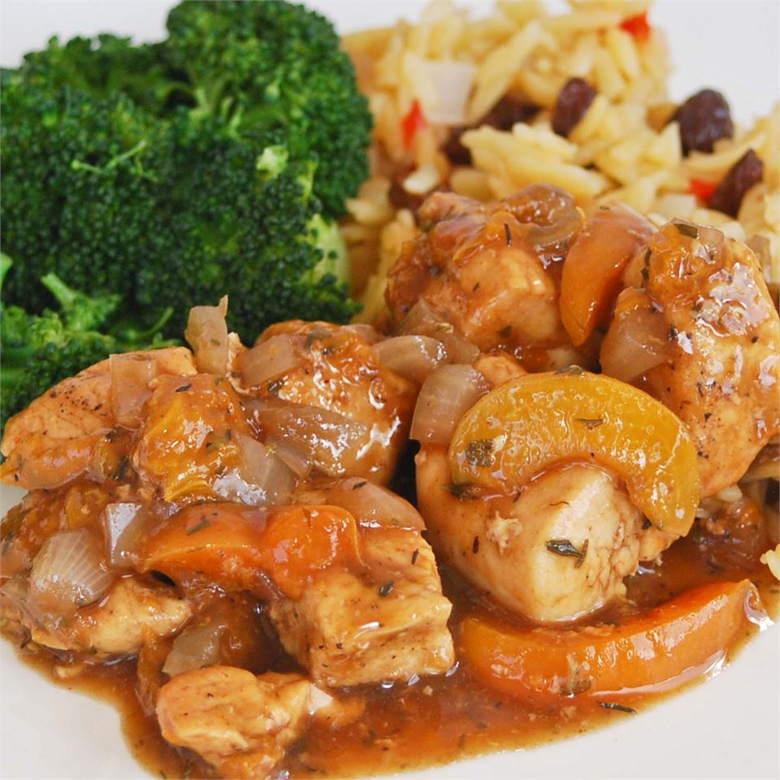

Apricot Chicken with Balsamic Vinegar

Description
This chicken is cooked with apricots, balsamic vinegar, broth, and thyme. It's super yummy and a hit every
time!
It takes 25 minutes to prep for this dish and another 30 minutes to actually cook the dish, adding up to 50
minutes time for complete dish. It yields 8 servings for the quantity of ingredients mentioned below.
The nutrition content of this dish per serving is as follows: 327 calories; protein 25.1g; carbohydrates
44.6g;
fat 6.4g; cholesterol 64.7mg; sodium 163.9mg.
Ingredients
- Extra-virgin olive oil: 2 tablespoons
- Chicken breast tenderloins, cut into bite-size pieces: 2 pounds
- Salt and Pepper: to taste
- Large chopped onion: 1(optional)
- Balsamic Vinegar: 1/4 cup
- Dried Apricots: 20
- Chicken stock: 1 cup
- Fresh chopped thyme: 1 tablespoon
- Apricot preserves: 1 cup
- Fresh chopped flat-leaf parsley: 3 tablespoons(optional)
Steps
- Heat the olive oil in a large skillet with a lid over medium-high heat.
- Season the chicken with salt and pepper, and cook in the hot oil until golden brown around the edges, but
still pink in the center, about 5 minutes.
- Stir in the onion, and cook for about 3 minutes more.
- Pour in the balsamic vinegar, bring it to a simmer, and allow it to reduce for a few minutes.
- Cut half of the apricots in half, leaving the others whole.
- Place the apricots into the skillet, and pour in the chicken stock.
- Bring to a simmer, then stir in the apricot preserves and thyme.
- Reduce the heat to medium-low, cover, and simmer until the apricots have softened, 10 to 15 minutes.
- Sprinkle with chopped parsley to serve.
Odin's Menu